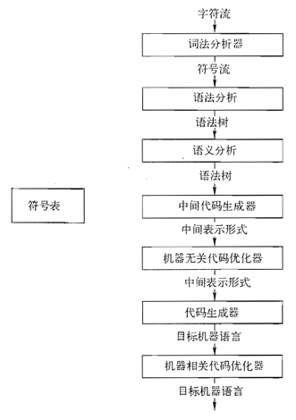
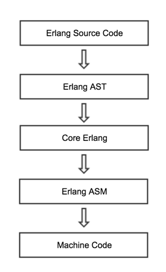
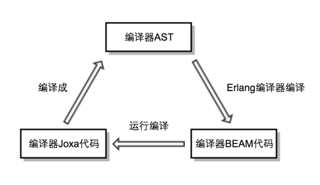

Joxa: 一种基于 Erlang VM 的现代 Lisp 编程语言
Joxa是一种基于Erlang VM的现代Lisp编程语言，创始人是美国的Eric Merritt[1]。通过在Erlang VM上引入一个精心设计的Lisp语法，它保留了Lisp和Erlang两者的众多优点：简洁而且语义清晰的Lisp语法，强大的Macro，鼓励交互式开发，支持高并发，函数式风格等，并且与现有的Erlang平台保持良好兼容。它是一门功能全面的通用编程语言。
Joxa的官方网站是joxa.org，在这个官方网站上，有它的源代码github地址，以及在线文档。为什么这门编程语言取名为Joxa呢？关于Joxa这个名字的由来，Eric Merritt曾经对我在邮件组的提问做过如下解释：
其实这个名字并无特别的意义。很多年前我想开始一个“基于Java的某个项目”，于是有了它的缩写Joxa这个名字。这个项目从来没有开始做过，但我把域名买下来了并一直持有着。到今天，4个字母的域名已经很少能注册到了，所以我决定用它来做为这门语言的名字。[2]
除了名字开头有个字母"J"，Joxa与Java并没有太大的关系了，Joxa主要受到了Erlang及基于JVM的编程语言Clojure的影响。下面我们先介绍一下Erlang和Clojure，再讨论Joxa受到了它们的哪些影响。
1. Erlang, Clojure以及Joxa #
1.1 Erlang，高并发的函数式容错编程语言 #
Erlang是一门通用的并发程序设计语言，它由瑞典爱立信的Joe Armstrong在上世纪80年代开发，并于1998年对外开源，Erlang这个名字来源自丹麦数学家及统计学家Agner Krarup Erlang。经过近30年的发展，Erlang目前是支持高并发的编程语言翘楚之一，它在语言层面封装了Actor模型，实现了用户空间的轻量级进程，将消息传递作为Actor间通信的唯一方式，避免了由传统的线程和锁在并发方面的限制与缺点。Erlang被设计为电信级系统的编程语言，强调分布式，容错，软实时和公平调度，在语法上它主要受到Prolog及Lisp的影响，保留了函数式，动态，交互式开发等特点。具体来讲，Erlang这个名字可以分成3个方面的要素：
- 编程语言Erlang本身
- 总称为OTP的一系列程序设计原则及代码库
- 称为Erlang VM或BEAM的Erlang虚拟机
Erlang设计于近30年前，因此从现在的角度来看，它在语法，编程环境(包括文档等)及工具链等方面有很多地方都有改进空间。由于Erlang VM是目前工业界支持高并发的最成熟的VM之一，大量技术专家及工程师们在上面投入了无数的工作，通过在Erlang VM上设计一门新语言来重用Erlang VM的优良特性，既能发挥Erlang VM的长处，又能改善Erlang语言本身在语法、工具链等方面的缺点，扬长而避短，是比较完美的方案。业界近几年涌现了众多基于Erlang VM的编程语言，下面介绍其中几种：
- LFE
LFE是Lisp Flavored Erlang的缩写，它是由Robert Virding[3]于2007年开始开发的一门函数式的并发的通用编程语言，LFE采用了Lisp-2[4]风格的语法，通过将LFE代码编译为Core Erlang代码运行在BEAM上，保留了Erlang VM分布式，容错，软实时等优点，同时支持Lisp Macro，使得LFE兼有强大的元编程能力，并实现了一个功能丰富的REPL[5]。 - Reia
Reia是一门基于Erlang VM上的类似Ruby的脚本编程语言，它由Tony Arcieri[6]于2010年中开始开发，它在Erlang VM的分布式，并发，容错，热更新的基础之上，引入了Ruby的友好语法，灵活的代码块，反射及元编程功能力。遗憾的是，Reia在2011年宣布不再更新。 - Elixir
Elixir是一门动态的函数式编程语言，它由José Valim[7]于2012年开发。Elixir同样采用了类Ruby的语法，通过支持强大的Macro功能，它在简洁的语言核心上，建立了一系列的标准库，包括Unicode字符串及相关操作，重写了单元测试框架，丰富的数据类型等，它吸收了Clojure的Protocol，严格和惰性API，还提供了现代的交互命令行，脚本相关的库函数及项目管理工具。通过将Elixir代码编译为Erlang AST，Elixir得以重用Erlang VM的高并发及高效率，克服了Ruby在并发方面的缺陷。由于得到Jose及其它Ruby界牛人的喜爱及宣传[8]，Elixir在近两年开始流行起来。
由于本文主要是讲Joxa，上述这几种编程语言只是简单带过，就不详细展开了。
上面几种编程语言的设计方案虽然有很多不同之处，但从整体思路上几乎是相同的，那就是：通过将代码编译成为Erlang VM上的代码，良好兼容Erlang VM，于是保留了上述3要素中的后两点，同时从头设计语言的语法，并在标准库，工具链等一些方面做补充完善。Joxa的设计也是类似，它选择了Lisp做为Erlang VM上的新语言，不过它走了一条和LFE不同的道路。Eric Merritt后来专门写了一个博客文章《Differences Between Joxa and LFE》来谈Joxa和LFE的不同之处，他说：
最主要和重要的区别在于这两门语言的目标。我认为Robert实现LFE的主要目标在于提供一个可变的语法可扩展的Erlang版本，如此一来人们就可以在需要时改变语言。同时我坚信Robert喜欢实现编程语言，他应该很享受实现LFE的过程。我当然也乐于实现Joxa，然而，当坐下来实现Joxa的时候我怀有一些非常特定的目标：
- 我需要一个用于开发DSL(Domain Specific Language，领域特定语言)的平台
- 我想要一个更具交互性和动态的开发环境。类似于Slime和Swank那种[9]
- 我希望充分利用所有已经存在的相当优秀的Lisp工具
上述每点都可以在Erlang里面解决。例如，我可以用Leex和Yecc[10]实现DSL，但我实现DSL的最好体验总是来自Lisp：使用Lisp函数和Macro来打造这些DSL。不过我使用Erlang有很长时间了，我不愿意放弃Erlang VM上面的优良功能来换成Lisp的种种优点。唯一的解决方法似乎只有使用一门基于Erlang VM之上的Lisp语言。
显而易见的首先选择是LFE，于是我花了几周时间深入研究这门语言和它的内部实现。最后我得到这个结论：它并没有满足我的需求。剩下的唯一退路就是我自己重新创造一门语言(同时也有一点怀疑自己不太明智)。
从整体来看，LFE更像一门披着Lisp外衣的Erlang，相当于给原来Erlang语法添加了括号和Macro，这与Eric Merritt理想中的Erlang VM上的Lisp语言相去甚远，于是他创造了Joxa，而Joxa的语法及风格受到Clojure的影响更大。为什么Clojure能受到Eric的如此青睐呢？它到底有什么出众之处呢？下面我们来了解一下。
1.2 Clojure，JVM上的函数式Lisp编程语言 #
Clojure是一门动态的强类型编程语言，作者是Rich Hickey。它寄居在JVM之上，设计成能够与JVM/Java良好互操作，既利用了JVM所提供的成熟高效的运行环境，也兼容众多流行的Java库与框架，同时它采用了Lisp语法和Macro，非常便于表达DSL，加上一套函数式的持久数据结构，并提供并发机制及惰性语义，使得简洁优雅语言成为函数式编程，并发编程的良好载体，同时重用了成熟流行的JVM平台，使得它便于在现有Java程序员中推广并流行，在这一点上区别于以往所有独立开发的函数式语言。此外它也吸收了Java中的面向对象思想和CLOS[11]，发展出Protocol及多重方法。另外，Clojure自带一系列丰富的标准库，定义了一套项目管理规范，并提供了优秀的项目工具及REPL，使得它在开发环境，交互式开发方面成为佼佼者。
Clojure设计成为Java的一个库包，Clojure代码会编译成JVM byte code，正因为它以一种非侵入性的方式运行在JVM之上，所以在函数式的语言层面，会有一些其它函数式语言不可能出现的“瑕疵”，例如函数没有尾递归优化。兼容JVM平台的已有代码，在重用/连接已有项目方面既是一种优势，但有时混合函数式与命令式代码也会产生实际冲突。在并发方面，语言提供的多种并发原语，delay, future, promise，agent，STM等虽然强大，但从语言整体来看比较复杂。Clojure的很多地方可以体会到作者有意保持简单与功能(复杂)的平衡，在设计上做了务实折衷的克制。与此相反，另外一个基于JVM的语言Scala在设计上就显得博爱放任，看到各个好的特性就收入到语言当中，宛如中国古代的皇帝举国征选妃嫔。
相比各种“主流”编程语言，Clojure至今仍是小众语言，虽然如此，它的推出仍然不可谓不成功，既培养了一个健康壮大的社区，也在市场上占有一定的流行度，产生了一批具有相当影响力的项目，如流式数据处理框架Storm等。Clojure成功地向人们展示了这几个可能性：
- 在JVM平台实现一个函数式，并发的动态编程语言
- 通过融合持久数据结构，Protocol等优异特性，复兴Lisp
- 如何语言设计上在功能、简单与务实之间取得折衷平衡并树立起自身的特色
正因为有些如此之多的优点，Clojure才对程序员们有着如此之大的吸引力。也难怪身为老Lisp爱好者的Eric Merritt在创造Joxa时会受到Clojure的较大的影响。下面我们来谈谈Joxa的设计。
1.3 Joxa, Erlang VM上的新Lisp编程语言 #
对照上述多种语言的实现，Joxa的设计主要有如下几个要点：
- 上层语言为Lisp，主要目标为用于写DSL(或者作为其它上层Lisp的元语言)，语言的核心部分要简洁
- 底层将Joxa代码编译成Erlang VM代码，将Joxa代码映射到Erlang上的对应语法结构，比如Joxa里面的函数即为Erlang函数
- 语言核心之外提供REPL，方便编译/执行脚本的命令行工具等
其中Lisp的语法可以参考简洁，优雅的Clojure，由于Erlang VM与JVM有着非常多的差异，正如Erlang语言与Java语言有着非常多的差异，所以可以预期的是，Joxa在语法上面不能完全保持与Clojure一致，同时这里面有一个目标用户的问题：Joxa更多的是为了Clojure程序员转向Erlang平台而设计，还是为了Erlang程序员转向Lisp而设计。若为前者，就尽量保留可能多的Clojure语法及规范，若为后者则将语法尽可能向Erlang靠拢比较理想。这时Joxa选择了后一种，即认为Joxa主要是解决Erlang现有的问题，所以从语法上来考虑，最后出来的结果很可能是一种Lisp与Erlang的独一无二的新结合。所有的Lisp语言从结构上来看，都具有一种类似数学的体系结构，包括以下几个部分：
- 一切表达式皆为List，List有两种，原子及函数调用。代码即数据(总结为同像性)
- 7个基本原语(又称之为特殊Form)加上可以操纵语言本身的Macro，两者作为核心，在此之上演化出整个语言
这就像数学体系，最核心的部分是几条基本原理，然后通过逻辑推导，演化出其它数学分支以构成整个体系，可以不断向外扩展。Joxa将会有同样的结构，核心部分将保持尽可能的简洁，只包括基本原语及Macro，极简的核心既节省开发成本，也给外延留下尽可能大的空间。此处的外延包括针对特定问题领域而言的DSL，也包括其它上层的Lisp语言，从本质上来说这两者本来就没有区别，只不过因为针对的范围有大有小所以说法不同。从语法设计上，Joxa会跟LFE有如下的不同：
- Joxa会是Lisp-1，而LFE是Lisp-2
- Joxa的语法会向Lisp靠拢，而LFE更像Erlang
- Joxa中Macro求值语义与Lisp更为一致，而LFE的Macro求值语义与函数求值语言不同
为了保持与Erlang VM现有的平台等保持无缝兼容，以充分利用现有的Erlang VM的开发规范与代码库等，第2点是必需的。将Joxa建立在Erlang VM平台的生态环境之上，固然是因为作者对Erlang VM的熟悉与喜欢，客观上也可以充分发挥Erlang生态的优势。从上面的叙述也可以看到，众多Erlang VM上的非Erlang编程语言也采用了这种“无缝兼容”设计，虽然它们在实现层面会有一些不同之处。这一点同时确定了Joxa将会保留Erlang的一些语言特性，例如按文件划分的模块化，函数式风格，代码要求先通过编译等。
第3点与开发环境相关，REPL是各种Lisp方言已经是司空见惯了，Erlang在设计的时候也吸收了这个概念，但是实现得不如Lisp的REPL那么好用，比如强制输入为表达式(每行的后面必须输入".“号)，Record不能用等。Joxa的REPL会参考Clojure与Erlang的REPL，结合前者的完整性和后者的功能，在易用性给予特别的关注。同时针对编译、脚本化等开发流程中的各个阶段都提供编辑器、命令行工具等支持。
2. 设计与实现细节 #
下面我们来详细讨论Joxa的设计与实现。根据上述的设计要点，要将Joxa代码要编译成Erlang VM代码，必需先熟悉Erlang代码的编译过程，在此过程中找出合适的切入点。
2.1 Erlang编译过程 #
一个经典的编译过程可以分为如下图所示的多个阶段：

图1 经典编译过程的各阶段[12]
经典的编译过程可以分为词法分析，语法分析，语义分析，中间代码生成，中间代码优化，机器码生成等多个阶段。Erlang的代码编译过程跟经典的编译过程基本一致，也可以分成类似的多个阶段，各个阶段的输入输出如下图所示：

图2 Erlang编译过程各阶段的输入输出
其中Core Erlang为于Erlang代码与VM内部中间代码之间的一层，它是在1999年前后提出的一种BEAM(Erlang VM的最新实现)上的语言，它被设计为：
- 语法清晰简单，严格的更高阶函数式语言
- 尽可能规范化，以便相关代码遍历工具的开发
- 从Erlang代码向Core Erlang代码的翻译应该直白，从Core Erlang向VM内部实现中间代码的翻译也应该简单
- 有良好定义的文本表示形式，语法简单无歧义，便于人阅读，调试及测试
由于Core Erlang是清晰简单，有良好定义的文本语言，便于作为目标语言，而且Erlang的代码优化和错误检测大多都在Core Erlang层进行，如果我们要在Erlang VM打造新编程语言，那么将新语言的代码编译成Core Erlang(或AST)，将会是一个很好的解决方案。很多Erlang VM上的语言都选择了这种方案，比如LFE，但也有语言选择了编译成Erlang AST，比如Elixir，精通Elixir Macro的人对Erlang AST应该比较熟悉。相对于Core Erlang，Erlang AST更接近于Erlang本身，层次也更高。Core Erlang相关的功能定义在cerl.erl这个模块里面，包括对如模块、函数等各种Erlang语言结构的初始化、操纵等功能的一系列函数。
2.2 一个简单例子 #
下面举一个简单的Hello World程序作为例子[13]，让读者对Erlang AST与Core Erlang有一个感性认识。原始的Erlang代码如下：
-module(test).
-export([hello_world/0]).
hello_world() ->
io:format("Hello World").
对应的Core Erlang代码如下所示：
module 'test' ['hello_world'/0]
attributes []
'hello_world'/0 =
fun () ->
call 'io':'format'
(“Hello World”)
对比两份代码，可以看到Core Erlang与Erlang之间的映射还是很直观的。将原始的Erlang代码编译为Erlang AST，可以得到：
[{attribute,1,module,test},
{attribute,2,export,[{hello_world,0}]},
{function,2,hello_world,0,
[{clause,2,[],[],
[{call,3,
{remote,3,{atom,3,io},{atom,3,format}},
[{string,3,"Hello World"}]}]}]}]
编译为Core Erlang AST即得到：
{c_module,[],
{c_literal,[],test},
[{c_var,[],{hello_world,0}}],
[],
[{ {c_var,[],{hello_world,0}},
{c_fun,[2,{file,[]}],
[],
{c_call,[3,{file,[]}],
{c_literal,[3,{file,[]}],io},
{c_literal,[3,{file,[]}],format},
[{c_literal,[3,{file,[]}],
"Hello World"}]}}}]}
对比两者，容易看出Erlang AST更高层更抽象，Core Erlang AST更底层更规范。
2.3 编译器 #
下面我们继续来讨论Joxa的编译过程，由于Core Erlang(及AST)可以由Erlang编译器编译成最终的机器码，我们只需将Joxa代码编译成Core Erlang AST便可实现将Joxa编译成机器码整个编译过程，从编译领域的分类来看，目标生成的代码是Core Erlang AST，操纵Core Erlang AST可以直接调用cerl.erl的接口函数，因此编译器后端这一块相对是比较简单的，重点在于前端部分：即将Joxa代码编译成Core Erlang AST。由于Joxa是Lisp语法，Lisp代码以括号划分边界的代码树的方式来表示，本身就已经有良好的结构，所以前端部分也比较简单。区别于LFE或Elixir用Leex或Yecc来生成LALR[14]式Lexer与Parser，Joxa采用了手写PEG[15] Lexer和Parser的方式。PEG编译器的代码量较小，Joxa编译器是在Erlang PEG生成器Neotoma生成代码的基础上写成的。(本节涉及到很多编译领域的术语或技术，由于本文主要是介绍Joxa，篇幅所限故不会详细解释这些术语或技术，有兴趣的读者可以自行寻找相关的资料做进一步了解)
特别值得一提的是，Joxa的编译过程是自举的，即Joxa编译器本身是由Joxa代码编写的，这与LFE或Elixir的编译器用Erlang编写不同。Joxa的自举要求先有一份以Core Erlang AST格式存在的具有正常编译功能的代码，这部分代码在Joxa的Github代码库中，相对根目录的路径是src/ast(后面给出所有的代码路径都相对于根目录)。通过用Erlang编译器将这份AST代码编译成BEAM代码，然后就得到一个能直接在BEAM上执行的Joxa编译器，然后就可以运行此编译器，将编译器的Joxa源代码编译成Core Erlang AST格式。整个流程和依赖如下图所示：

图3 Joxa的自举及编译流程
由上图可以看到整个流程三个步骤是一个循环，要成功实现自举，必然要先实现其中的一个部分，在此基础上才能实现其中其它两个部分。在Joxa的编译器实现中，AST这部分先由作者Eric人手先写出基本的语法解析功能，然后再编写对应功能的编译器的Joxa代码，用AST编译出来可执行的编译器，去验证对应的Joxa代码，然后再按此流程不断添加更多的功能，错误一般出现在编译Joxa代码的时候，此时遇到的错误是由新添加的AST代码还是Joxa代码引起的，有时并不容易定位出来。虽然Core Erlang简单清晰，但手写Core Erlang AST是相当繁琐的，而且由于Joxa语法本身还在不断演变，从头开发一个这样的自举编译器，其难度可以猜想是比较大的。我曾经为Joxa添加过Map语法的支持，对此开发流程的复杂性有较深的体会。编程语言的自举也可以按另外一个思路来做：先用另外一门常见的语言，比如C语言来写编译器，然后当语言的语法发展到比较稳定成熟的时候，再使用这门语言的本身来实现自身的编译器，由于已经有了一个能够工作经过充分检验的C编译器，所以自举的实现就有了一个可靠的保障，大大降低其难度。
编译器这部分的Joxa代码的路径是src/joxa-cmp-*.jxa(其中*符号表示通配)。按照编译器前端和后端的分类法，下面我们讨论一下各主要文件的代码分布。PEG的词法分析部分需要构造一系列对应于词素(lexeme)的正则表达式，首先需要有正则表达式的元操作的函数定义，所谓“元操作”，用各种编程语言里面的正则表达式的术语来说，即是元字符，比如”*“符号用于“匹配0个或多个”。在PEG里面元操作是通过函数来表达的，这部分的代码在src/joxa-cmp-peg.jxa。词素，比如注释或数字，它们的定义放在src/joxa-cmp-lexer.jxa。src/joxa-cmp-parser.jxa则包含Parser的代码。编译器的主要逻辑放在src/joxa-compiler.jxa，它调用Parser来解析读入的字符流，成功解析之后调用make-forms函数递归遍历解析得到的语法树来生成Core Erlang AST，在编译过程中会执行对函数调用的合法性检查，Macro的递归展开等动作。后端的代码按语义的分类分成下述多个文件：
├── joxa-cmp-binary.jxa # Binary
├── joxa-cmp-call.jxa # 函数调用
├── joxa-cmp-case.jxa # case语句
├── joxa-cmp-defs.jxa # 函数、宏定义
├── joxa-cmp-expr.jxa # 表达式
├── joxa-cmp-joxa-info.jxa # 模块info
├── joxa-cmp-literal.jxa # 常量，常量表达式
├── joxa-cmp-ns.jxa # namespace
└── joxa-cmp-spec.jxa # spec
以上即为Joxa编译器实现各部分代码的所在文件。整个编译器实现从代码量上来说并不大。
2.4 数据类型 #
与Elixir在Erlang数据类型的基础上添加了Range、正则表达式、Unicode字符串等新数据类型不同，Joxa支持的数据类型与Erlang保持一致，并没有添加新的数据类型，所有的数据类型包括如下几种[16]：
- 简单类型：不定长整数，浮点数，原子
- 系统类型：PID, Port, Reference
- 集合类型: Tuple, Record，Map, List, Binary
各种数据类型的字面量语法请参考Joxa的在线文档。值得一提的是，围绕Record的各种操作，Joxa在语法上做了包装，便于解耦Record的内部实现与接口，提高了可用性，Elixir在这个方面走得更远，引入了Clojure的Protocol。另外一个常用的集合类型set是通过Erlang库提供的，并没有赋予特别的语法。
2.5 特殊Form及标准库基础原语 #
Joxa里面的特殊Form及标准库中的基础原语包括以下几个:
-
let*,let
用于绑定变量，不同于Erlang中的绑定操作或Clojure的let操作，let*并不支持Pattern Matching或解构，Pattern Matching或解构需要通过case，标准库中的let是一个用let*和case实现的对应支持Pattern Matching的版本 -
case
整个Joxa语言中为数很少的一个支持Pattern Matching的原语之一，与Erlang里面在函数签名，变量匹配，case语句等各种语法结构都可以做Pattern Matching不同 -
receive
接收消息，但没有对应的send原语，这可以通过调用Erlang模块或OTP库接口实现，支持Pattern Matching -
do
分组表达式成一块，类似于Lisp里面的progn -
apply
以列表函数调用指定函数，类似于Lisp的apply -
fn
构造匿名函数，类似于Erlang的fun，或Lisp的lambda -
defn,defn+
定义模块内可见，模块外可见函数 -
defspec
用于定义前置声明 -
defmacro,defmacro+,quote,quasiquote,~,~@,gensym,macroexpand-1
Macro操作，下一节再展开讨论 -
use,require,as
namespace相关操作，源自于Clojure里面的对应物，要注意的是不同于Clojure默认会在所有namespace自动导入clojure.core，Joxa并不会自动导入joxa-core -
try*,try
两者catch用于异常捕取，用法跟Erlang里面的对应物类似，两者的区别在于是否支持Pattern Matching，类似于let*和let -
特殊常量，都以函数方式进行调用
($filename) ;; 当前文件的文件名(连后缀) ($namespace) ;; 当前的namespace ($line-number) ;; 当前的行号 ($function-name) ;; 当前的函数名 -
其它如
attr，when等原语就不一一列举了。
2.6 Macro #
作为Lisp类语言的杀手级特性，以及表达DSL的终极利器，一直以来Macro在Lisp类语言中都有着重要的地位。Joxa中的Macro原语与Common Lisp或Clojure等之前的Lisp语言保持了一致，详细列出如下：
defmacro -- 定义模块内部Macro
defmacro+ -- 定义对模块外部可见Macro
quote -- 抑制求值
quasiquote -- 对应Common Lisp里面的back quote，或Clojure里面的syntax quote，部分求值
~ -- unquote，对符号后面元素进行求值
~@ -- unquote-splicing，对符号后面的List元素进行求值并展开到当前位置
gensym -- 动态生成新变量，用于保证Macro健康(或称Macro卫生)
另外为方便调试，标准库中提供了macroexpand-1函数，用于单次展开Macro，这个函数也沿袭于传统的Lisp语言，但是并没有提供macroexpand(macroexpand-all)。
在Joxa里面使用Macro，跟之前的Lisp语言并没有什么不同，以一个标准库joxa-core模块里的代码为例：
(defmacro+ let (args &rest body)
(let* (process-arg-body
(fn (arg)
(case arg
([r e]
`(case ~e
(~r ~@body)))
((r . (e . rest))
`(case ~e
(~r ~(process-arg-body rest))))
(detail (erlang/error {:malformed-let-expression detail})))))
(process-arg-body args)))
Joxa在语法上直接定义为Lisp风格，因此在Macro的定义及使用上面，与传统一脉相承并无修改。在这个Macro定义里面，除了Pattern Matching，以及递归调用process-arg-body之外，与传统Lisp语言并无不同，熟悉传统Lisp的人可以很快就读懂。对比的来看，在Elixir这样的非Lisp语言中引入Macro，由于上层语言的语法与AST并不一致，所以程序员必需记住/区分上层语言与AST两种环境，因此相对较为复杂，比如，在Elixir Macro的签名处Pattern Matching Erlang AST，就在以Elixir的语法编写的Macro定义中，暴露了底层的AST格式。这种复杂性虽然从设计上来说是必需的折衷，但在习惯了Lisp Macro的人看来可能不会太喜欢。Joxa作者Eric在2015年一次接受《This is not a Monad tutorial》的采访中就表示过不喜欢Elixir Macro的复杂性。
2.7 标准库概览 #
Joxa的标准库只包括少数几个基本函数以及对OTP的简单包装。详细列出如下：
joxa-core
基本操作:!=,lte,gte,and,or,+,-,incr,decr,if,when,unless,try,let,definejoxa-eunit
eunit相关函数封装joxa-lists
list相关的功能函数：dolist,hd,tl,foldl,map,lists-binding,#,all,anyjoxa-records
Record相关函数joxa-shell
REPL函数的简单实现joxa-otp,joxa-otp-gen-server,joxa-otp-supervisor,joxa-otp-application
Erlang OTP相关接口的封装函数
代码规模很小，跟Elixir的标准库相比差得很远。其功能比较简陋，称之为标准库也许太大，或者称之为帮助函数更加准确。由于Joxa可以直接调用Erlang代码，因此功能缺失之处可由其它Erlang库补充。
2.8 开发环境及工具链 #
目前Joxa只有一个名为joxa的命令行工具，用于编译Joxa源代码，启动REPL，这个工具的功能也比较简陋，跟Clojure的REPL还有很大的距离。源代码中有一个Emacs的Major Mode配置文件emacs/joxa-mode.el，可以在用Emacs开发Joxa时设置缩进，关键字高亮，键绑定等。上面提到的与Slime和Swank集成，则尚未开发。
2.9 项目状态 #
Joxa从2011年底开始开发，一直到2013年初都比较活跃，这之后代码提交量变得相当少，在当前这个时间点(2015年8月)回头看看提交日志，已经有一年多的时间没有任何更新。虽然还未完成原来的设计目标，wiki上面的计划也有很多开发要做，但是由于作者Eric工作上比较忙，而Joxa社区实在太弱小，除作者之外并没有其它的人员贡献过大量代码，因此短期之内似乎项目状态不会重新变得活跃。在Google Group上有Joxa的邮件组，在近一年多时间内也相当少人发言。在应用上，除了作者Eric将Joxa用于编写他的创业项目之外，目前市面上没有看到其它的应用[17]。综合来看，Joxa的项目状态是比较停滞的。
3. 总结 #
Joxa是一种基于Erlang VM的现代Lisp语言，有着简洁清晰的Lisp语法，支持强大的Macro，是在Erlang VM编写DSL的一个很好的载体，它无缝兼容Erlang VM平台，是一门功能全面的通用编程语言。它在语言设计及编译器实现方面质量优良，但目前完成度不高，工具链并不完整，市面上也少见应用。作为一门较新的基于Erlang VM的编程语言，它有待进一步的发展完善。
注：
[1] Eric Merritt是《Erlang and OTP in Action》(中文译本《Erlang/OTP并发编程实战》)一书的作者之一，Erlware项目联合创始人，Afiniate公司的CTO。
[2] 翻译自邮件原文
It doesn’t actually mean anything. Many years ago it was an acronym for some project I wanted to start ‘Java oriented something or other’. I never made that project but I bought the domain and have kept it these years. Four letter domains are pretty uncommon these days, so I just decided to use it as the name for the language. Thats all.
[3] 作为Erlang语言联合创始人以及Joe Armstrong的长期亲密战友，Robert Virding自从当年在爱立信计算机科学实验室开始，长期以来在Erlang的设计，标准库，编译器，发展推广等方方面面都做了杰出的贡献。
[4] Lisp-1和Lisp-2的区别在于函数与变量是否共用同一命名空间，一个详细的解释可以参考文章《What’s Lisp-1, What’s Lisp-2? Bad Jargon or Good Jargon?》
[5] REPL是Read-Eval-Print Loop的缩写，最早被用于指代开发Lisp程序过程中，交互式命令行不断执行读取程序员的输入代码，对其进行求值并打印出求值结果的循环动作。后来这个概念被Python，Ruby及各种交互式命令行工具吸收并推广开来。
[6] Tony Arcieri是一位美国的软件工程师，他的博客见这里。
[7] José Valim是一位波兰的软件工程师，他最被人熟知的两个身份是Ruby On Rails的核心成员以及Elixir编程语言的创始人。
[8] 比如Joe Armstrong于2013年中写了博客文章《A Week with Elixir》盛赞了Elixir“结合了Ruby和Erlang的优良特性”，Dave Thomas于2014年发布了新书《Programming Elixir》向有其它语言经验的程序员提供了一本系统的教程。
[9] 译者注：Slime是Superior Lisp Interaction Mode for Emacs的缩写，它为Emacs提供了一整套交互式开发Common Lisp的功能集，包括编译，调试，文档查找等等，Slime是客户端，Swank是对应的服务器端，它们共同组成了一个强大的程序开发环境。
[10] 译者注：Leex和Yecc是Erlang语言的Lex和Yacc工具集。
[11] CLOS是the Common Lisp Object System的缩写，是指在Common Lisp中实现面向对象机制的一系列代码库。
[12] 此图来自编译领域的经典著作《Compilers: Principles, Techniques, & Tools》第三版，中译本《编译原理》。
[13] 这个例子来自Eric Merritt 2012年8月在Chicago Erlang User Group上的技术分享《Joxa: A Full Featured Lisp on the Erlang VM》，录像视频见这里.
[14] LALR是LookAhead LR的缩写，LR中的L表示对输入进行从左到右的扫描，R表示反向构造出一个最右的推导序列。LALR是流行的自底向上语法分析方法。
[15] PEG是Packrat Expression Parsing的缩写，它是一种相对较新的自顶向下语法分析方法。
[16] 其中Map的语法支持由我添加，写此文时未进入主干分支。
[17] 从推广应用的角度来看，在2011年中开始开发的Elixir在各个基于Erlang VM的新编程语言上是走得最前的。